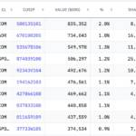

エンジニアブログ - GMOインターネットグループ グループ研究開発本部
https://recruit.gmo.jp/engineer/jisedai
新しい技術で新しい価値を提供するGMOインターネットグループ グループ研究開発本部 グループ研究開発本部とは
フィード

13F filingで大口投資家の動きを分析してみる
エンジニアブログ - GMOインターネットグループ グループ研究開発本部
はじめに グループ研究開発本部・AI研究開発室のS.Sです。 前回・前々回とChatGPTに金融データ分析を行わせる記事を書いてきているので、今回もその関連で13F filingを通して米国株の保有状況を分析し、大口の機 […]The post 13F filingで大口投資家の動きを分析してみる first appeared on GMOインターネットグループ グループ研究開発本部.
2日前
MarkItDownを活用した請求書データ抽出機能の検証 1
1
エンジニアブログ - GMOインターネットグループ グループ研究開発本部
1. はじめに こんにちは、次世代システム研究室のT.D.Qです。ビジネスでは、PDFや画像形式の請求書からデータを抽出する作業が頻繁に発生します。本記事では、Microsoftの「MarkItDown」ライブラリとOp […]The post MarkItDownを活用した請求書データ抽出機能の検証 first appeared on GMOインターネットグループ グループ研究開発本部.
5日前

ニュース情報からLLMを使用して企業間関係グラフの生成
エンジニアブログ - GMOインターネットグループ グループ研究開発本部
はじめに 企業間の関係性を正確かつ迅速に把握することは、ビジネス戦略の策定や市場分析において不可欠です。しかし、現代のビジネス環境は情報の洪水とも言える状況であり、膨大なニュース記事や報道から有用な情報を抽出することは容 […]The post ニュース情報からLLMを使用して企業間関係グラフの生成 first appeared on GMOインターネットグループ グループ研究開発本部.
2ヶ月前
Claude analysis toolのデータ分析性能をGPT-4oとGeminiと比較してみた
エンジニアブログ - GMOインターネットグループ グループ研究開発本部
TL;DR Anthropicは、Claude.aiに「analysis tool」という機能をリリースしました。これによりJavaScriptのコードを生成・実行しデータの分析など可能です。既存のArtifactsでの […]The post Claude analysis toolのデータ分析性能をGPT-4oとGeminiと比較してみた first appeared on GMOインターネットグループ グループ研究開発本部.
3ヶ月前
続・GPT-4oで画像解析をやってみた Fine-tuning編
エンジニアブログ - GMOインターネットグループ グループ研究開発本部
TL;DR OpenAIは2024年10月1日に公開した新しいAPIの１つがVision Fine-tuningです。これはGPT-4oの画像認識能力を追加学習(ファインチューニング)できる新機能です。Vision Fi […]The post 続・GPT-4oで画像解析をやってみた Fine-tuning編 first appeared on GMOインターネットグループ グループ研究開発本部.
3ヶ月前
【第一回】M2 Macbook ProからTurtlebot3 (Noetic)をなんとか動かせないだろうか
エンジニアブログ - GMOインターネットグループ グループ研究開発本部
はじめに こんにちは。グループ研究開発本部、AI研究開発室のY.Tです。 今日はM2 Macbook ProからTurtleBot3を動かすための環境構築の記録を残そうと思います。 まず、公式の情報を確認しますが、Tur […]The post 【第一回】M2 Macbook ProからTurtlebot3 (Noetic)をなんとか動かせないだろうか first appeared on GMOインターネットグループ グループ研究開発本部.
3ヶ月前
クラウド移行で改善するガバナンスファーストの障害対策
エンジニアブログ - GMOインターネットグループ グループ研究開発本部
こんにちは。次世代システム研究室のT.Tです。 2024年9月24日に行われた社内の研究発表会の内容をご紹介します。現在開発運用に携わっているサービスのシステム基盤のAWSへの移行を検証しています。常時稼働が求められるサ […]The post クラウド移行で改善するガバナンスファーストの障害対策 first appeared on GMOインターネットグループ グループ研究開発本部.
3ヶ月前
TypeORMのv0.2からv0.3への移行
エンジニアブログ - GMOインターネットグループ グループ研究開発本部
こんにちは。次世代システム研究室のL.W.です。 NestJS + TypeORMのプロジェクトの中でTypeORMのバージョンアップを行いましたので、その知見を共有させて頂きたくと思います。 目次 1.前 […]The post TypeORMのv0.2からv0.3への移行 first appeared on GMOインターネットグループ グループ研究開発本部.
3ヶ月前
Google Cloud （GCP）Document AIを使ったデータ抽出の最適化
エンジニアブログ - GMOインターネットグループ グループ研究開発本部
1. はじめに こんにちは。次世代システム研究室のK.X.Dです。 現在関わっているプロジェクトでは、契約書の請求書を審査する機能を実装しています。 ユーザーが効率的に請求書の審査情報を入力できるよう、アップロードされた […]The post Google Cloud （GCP）Document AIを使ったデータ抽出の最適化 first appeared on GMOインターネットグループ グループ研究開発本部.
3ヶ月前
不均衡データは相関係数よりもROC-AUC値の方が役に立つ？
エンジニアブログ - GMOインターネットグループ グループ研究開発本部
まとめ 不均衡のバイナリ変数と連続値の変数の関係を見るとき、相関係数はバイナリが不均衡になると関係性をうまく表現できない場合があり、ROC-AUC値はバイナリの不均衡に対して頑健であるという結果がシミュレーションで示され […]The post 不均衡データは相関係数よりもROC-AUC値の方が役に立つ？ first appeared on GMOインターネットグループ グループ研究開発本部.
3ヶ月前